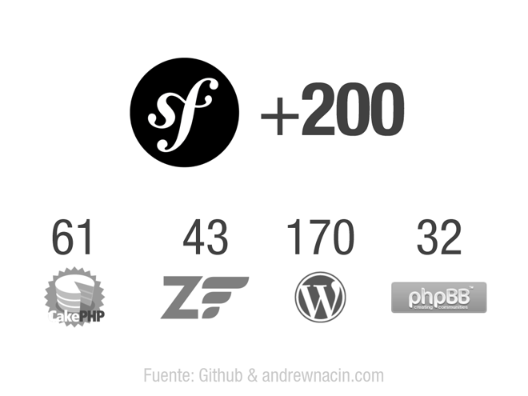
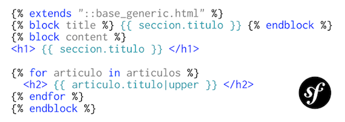

Acerca de mí

Mi nombre es Jesús Manuel Olivas
Me pueden encontrar en twitter como @jmolivas
En mi blog http://jmolivas.com
Quién se considera ?
Desarrollador PHP
Desarrollador PHP + Framework
Frameworks
Que es un Framework?
Pensemos en un framework (marco de trabajo) como una caja de legos esas que teniamos cuando niños con ellos podiamos construir casi cualquier cosa uniendo las diferentes piezas.
Recordemos que no todas las piezas eran iguales algunas tenían funcionalidades específicas, estas pueden ser los diferentes módulos, plugins, gemas o bundles.
Por que utlizar un Framework ?
- Un framework no es una necesidad absoluta, pero sin embargo es muy útil.
- Un framework (core/núcleo) es una garantía de calidad, capacidad de actualización y mantenimiento de aplicaciones a un costo menor.
- Las aplicaciones desarrolladas utilizando un framework cumplen con de los estándares del mercado.
Construye tus aplicaciones no tus herramientas
Este es el principio básico de todo framework: no tener que reinventar la rueda.
Además de la eliminación de malas prácticas y tareas de bajo valor agregado, por ejemplo, el desarrollo de componentes genéricos con el fin de centrarse totalmente en las reglas de negocio.
Symfony2
Que es Symfony ?
- Un conjunto de clases Orientadas a Objetos compatibles con PHP 5.3 y versiones posteriores.
- Un conjunto de componentes reutilizables de manera independiente y cohesionada que solucionan problemas comunes de desarrollo web.
- Es un framework de desarrollo en PHP que puede ser utilizado bajo el patrón Modelo Vista Controlador (MVC).
Origen
- Fundador - Fabien Potencier
- Desarrollado y mantenido principalmente por la empresa Sensio Labs en Francia en el 2005.
Symfony2 según Fabien Potencier
"Symfony2 no es un framework MVC. Symfony2 sólo proporciona herramientas para la parte del Controlador y de la Vista. La parte del Modelo es responsabilidad tuya, aunque existen librerías para integrar fácilmente los ORM más conocidos, como Doctrine y Propel".
http://fabien.potencier.org/article/49/what-is-symfony2
Modelo Vista Controlador (MVC)
Es un patrón de arquitectura de software que separa los datos de una aplicación, la interfaz de usuario, y la lógica de control en tres componentes distintos.
Modelo:
Esta es la representación específica de la información con la cual el sistema opera.Vista:
Este presenta el modelo en un formato adecuado para interactuar, usualmente la interfaz de usuario.Controlador:
Este responde a eventos, usualmente acciones del usuario e invoca peticiones al modelo y en ocaciones envia datos a la vista.
Capas del modelo MVC
Por que Symfony2 ?
Reputación:
Es un proyecto estable y reconocido, con una comunidad muy activa.Permanencia
El proyecto esta en la version 2.0.x y empezó desde el 2005.Referencias
Varios proyectos y empresas importantes lo estan utilizado Yahoo, Dailymotion, Opensky, Drupal 8, Behat, Doctrine, Propel, PHP Unit, Jackalope, Silex, PPI 2, Easybook, MIdgard CMS, Zikula (antes PostNuke), phpBBInnovación
Symfony2 fue creado tomando en cuenta las mejores prácticas existentes del mercado actualmente, tomando ideas de proyectos RoR, Java, Python.
Linea de tiempo
Una comunidad activa

Es el único, solo existe Symfony ?
Y en donde esta la diferencia ?
Que piezas trae la caja

Y Silex es igual ?
Que beneficios nos brinda
- Persistencia datos
- Seguridad
- Formularios
- Validación
- Plantillas
- Archivos de log
- Rendimiento
- Cache
- Archivos web
- Internacionalización
- Tareas programadas
- Enrutamiento
Cuales son las buenas prácticas ?
Hibernate
Ruby
Django

Flexibilidad
- Configuración PHP, XML, *YAML
- Plantillas PHP, *Twig
- Almacenamiento SQL, NoSQL
- Flujo de trabajo (rutas) *Anotaciones, Archivos
Rendimiento
Cache Reverse Proxy
Algunos comandos consola Symfony2
$app/console doctrine:database:create
$app/console doctrine:schema:create
$app/console doctrine:schema:update --force
$app/console generate:bundle
$app/console doctrine:generate:entity
$app/console doctrine:generate:form
$app/console doctrine:generate:crud
$app/console cache:clear
$app/console router:debug
$app/console assets:install web --symlink
Frameworks para necesidades específicas.
Drupal
Que es Drupal ?
Drupal es un programa escrito en PHP, con licencia GNU/GPL, que se utiliza como sistema base de sitios y aplicaciones web.
Su flexibilidad lo hace que sea adecuado para realizar diferentes tipos de sitios y aplicaciones.
- CMS (Content Management System)
- CMF (Content Management Framework)
Origen
- Fundador - Dries Buytaert
- Código fuente abierto en 2001.
- Drupal es el equivalente fonético en inglés a la palabra neerlandesa druppel que significa 'gota'.

Perfiles de instalación

Personalizado
Instalación, configuración y/o creación de módulos.
960gs
¿ Qué es y como funciona un sistema de grid como 960 ?
Un CSS Grid Framework es una herramienta que nos facilita el maquetado y el desarrollo de un sitio web al proveernos una guía sobre la cual trabajar.
Esta guía consiste en un sistema de columnas, espacios y márgenes que nos ayudan a posicionar los bloques de contenido de nuestro diseño de manera rápida y organizada.
Ejemplo sitio Drupal.org
Ejemplo sitio Drupal.org (grid 960)
jQuery
¿Qué es jQuery?
jQuery es una librería de JavaScript que permite simplificar la manera de interactuar con los documentos HTML, manipular el árbol DOM (Document Object Model), manejar eventos, desarrollar animaciones y realizar peticiones AJAX a páginas web.
Creada inicialmente por John Resig. Presentada el 14 de enero de 2006 en el BarCamp NYC.
Funcionalidad del núcleo
- Selectores
- Manipulación de atributos y CSS
- Iteración de elementos
- Manejo e Invocación de eventos
- Animación y Efectos
- Llamados o interacciones con AJAX
Ejemplos de jQuery
$(':text');
$(':checkbox');
$('div');
$('#id');
$('.classname')
$('div.classname', '#id');
$('input.editable', 'form').each(function(i) {
$(this).attr('required','required');
});
$('.btn').delegate('click',function() {
$.ajax({
url: 'load-file.php',
success : function(data, textStatus, jqXHR){
$('.wrapper').html(data);
}
});
});
JavaScript frameworks
MV* (MVC/MVVM)
- Backbone
- Ember
- Spine
- AngularJS
- Dojo
- Batman
- YUI
SCRUM (Metodología ágil)
Scrum más que una metodología es un framework para la gestión de proyectos. Se basa principalmente en la premisa de ejecutar un proyecto en iteraciones de entre dos y cuatro semanas, llamadas Sprints, y de duración fija (timebox). Esto quiere decir que las fechas de finalización de cada iteración no pueden ser pospuestas.
Valores del manifiesto Agil
- Valorar a las personas y las interacciones entre ellas por sobre los procesos y herramientas.
- Valorar el software funcionando por sobre la documentación detallada.
- Valorar la colaboración con el cliente por sobre la negociación de contratos.
- Valorar la respuesta a los cambios por sobre el seguimiento estricto de los planes.
SCRUM ... continuación
- Falla rápido, falla en repetidas ocaciones y falla en público.
- Si la primera versión de tu producto no te hace sentir avergonzado significa que demoraste demasiado tiempo en liberlo.
- El software perfecto solo existe en la mente del desarrollador.
- Si agrega valor al producto puede ser considerado una tarea.
- Todos los problemas emergerán y se volverán visibles a medida que avancemos en los proyectos
- Cuando permitimos que las soluciones emerjan estamos frente a la solución más simple y apropiada para el contexto actual.
- No podemos imaginar el sistema completo de una vez y todo junto.
Buenas prácticas.
Respeta estandares de codificación
Propuesta y estándares de código recomendados establecido por el PHP Framework Interoperability Group
- Nate Abele: Lithium
- Guilherme Blanco: Doctrine, Doctrine2
- Jordi Boggiano: Composer, Packagist
- William Durand: Propel, Propel 2
- Andrew Eddie: Joomla
- Larry Garfield: Drupal
- Fabien Potencier: Symfony, Symfony2
Conforma un equipo multidisciplinario.
Administra tu tiempo.
Utiliza la técnica del Pomodoro para manejar el tiempo que dedicas a tus tareas y evitar interrupciones.
- 25 min de trabajo por 5 de descanso.
- Un descanso largo de 15/20 minutos por cada 4 pomodoros.
Ambiente de desarrollo === producción
Como desarrolladores con frecuencia nos encontraremos con que nuestro entorno de desarrollo es muy distinto del entorno de producción.
Es importante contar con un ambiente de desarrollo el cual sea una réplica ó al menos con características y muy similares al ambiente de producción.
Utiliza una VM (Virtual Machine/Maquina Virtual)
VirtualBoxVagrant (Adminstrador de VM)
*Requiere Ruby
$gem install vagrant
$vagrant box add {title} {url}
$vagrant init {title}
$vagrant up
$vagrant ssh
$vagrant status
Utiliza un repositorio para el código.
$git init
$git clone
$git pull
/* hack, hack, hack, code, code, code */
$git add .
$git commit -m 'TAG/ISSUE #: Que cambio...'
$git pull
$git rebase
/* conflictos */
$git add .
$git rebase --continue
$git push
git - la guía sencilla
Aprende git en 15 minutos en-linea.

Conoce tus herramientas.
Dedica un tiempo para explorar y conocer mejor tus herramientas de desarrollo. Eclipse, Sublime Text, Vim, PHPStorm, Netbeans, NotePad++.
Investiga los "Shortcut keys" o combinaciones de teclas y prácticalas.
⌘/ /* Comentar codigo */
⌘X /* Cortar linea */
⌘↵ /* Insert linea */
⌘⇧↵ /* Insert linea antes */
⌃M /* Mover hasta el siguiente ( ) { } */
Genera memoria muscular.

Busca y prueba nuevas tecnologías
HTML5
HMTL5 no es una sola cosa o una tecnología monolítica. Se trata de un conjunto de características, tecnologías y un API que brindan el poder del escritorio y la interactividad de la experiencia multimedia de la web.
HTML5 incluye la quinta revisión del lenguaje de marcado HTML, CSS 3, y una serie de APIs de JavaScript. Juntas, estas tecnologías permiten crear aplicaciones complejas que antes podían ser creados únicamente para plataformas de escritorio.
La web es semántica
El contenido tiene significado
<article>
<header>
<h1></h1>
</header>
<section>
<div class="grid-4"></div>
<div class="grid-4"></div>
</section>
<footer>
</footer>
</article>
Preprocesadores de CSS
Escribir CSS no es igual a cualquier lenguaje de programación.
- No existen variables.
- No se pueden hacer operaciones lógicas entre valores.
- No posee flujos de control.
- Esto es porque CSS es un Lenguaje de estilos.
- Necesitamos sitios mejor optimizados, más ligeros, con mejores experiencias del usuario
- Diseños dinámicos que cambian radicalmente por el tamaño de la pantalla e incluso por el tipo de dispositivo.
Ejemplo scss => css.
/* scss */
#v-gradient {
@include background-image(linear-gradient(#ffffff,
#cccccc, #aaaaaa));
}
/* CSS */
#v-gradient {
background-image: -webkit-gradient(linear, 50% 0%, 50% 100%,
color-stop (0%, #ffffff), color-stop(50%, #cccccc),
color-stop(100%, #aaaaaa));
background-image: -webkit-linear-gradient(#ffffff, #cccccc, #aaaaaa);
background-image: -moz-linear-gradient(#ffffff, #cccccc, #aaaaaa);
background-image: -o-linear-gradient(#ffffff, #cccccc, #aaaaaa);
background-image: -ms-linear-gradient(#ffffff, #cccccc, #aaaaaa);
background-image: linear-gradient(#ffffff, #cccccc, #aaaaaa);
}
CoffeeScript
CoffeeScript es un lenguaje de programación que compila en JavaScript. Si conoces JavaScript no te costará trabajo aprender CoffeeScript y probablemente agradecerás lo elegante y simple de su sintáxis, la cual se inspira mucho en Ruby o Python.
$npm install -g coffee-script
Aprende y prueba CoffeeScript
Interfaz visual.
Twitter bootstrap.
Atiende a todos los dispositivos.
¿ Qué es diseño responsivo ?
Se define como Diseño Responsivo Web o por sus siglas en ingles RWD (Responsive Web Design).
Una forma de desarrollar sitios web asegurando, que el diseño está optimizado para que el formato se ajuste en relación al tamaño de la pantalla del dispositivo mediante el uso de las siguientes técnicas:
- Un grid flexible como 960gs + AdaptJS.
- Imágenes flexibles/adaptivas, que se ajustan a un contexto fluido.
- CSS3 Media queries, que optimizan el diseño para diferentes contextos.
¿ Imagenes flexibles ó adaptivas ?
Es una práctica común definir instrucciones en las propiedades de clases dentro de las hojas de estilo para ajustar las imagenes en relación al tamaño del contenedor.
http://filamentgroup.com/examples/responsive-images
Es importante servir las imágenes adecuadas en relación al tamaño del dispositivo que esta consultado el sitio, regularmente la velocidad de coneccion en los dispositivos móviles es menor.
CSS3 Media queries
Son instrucciones condicionantes para determinar que hoja de estilo ó cuales clases dentro de esta seran las que se utilizen.
<link rel="stylesheet" href="style.css"
media="(min-width: 960px)">
@media screen and (min-width: 960px) {
// definición de clases y atributos.
}
Breakpoints
- 0-519 pixels: La mayoría de los telefonos en formato landspace, se podría ajustar el formato portrait con un ancho fluido CSS.
- 520-759 pixels: Teléfonos con pantallas amplias y resoluciones altas en formato landspace ó Tablets con resoluciones bajas o pantallas pequeñas en formato portrait.
- 760-959 pixels: La mayoria de Tablets en formato landspace.
- 960-1279 pixels: Tablets con pantallas alta definición, computadoras portatiles "laptops" y dispositivos de escritorio "desktop".
- 1280+: Monitores grandes o con resoluciones altas y televisiones inteligentes "Smart TV".
¿ Cuando es necesario pensar en diseño responsivo ?
- Estas pensando rediseñar o iniciar un sitio desde cero. Es necesario establecer esto al momento de elegir el framework base sobre el cual se implementará el sitio.
- Quieres reducir costos de implementación y mantenimiento. Es mas caro mantener una versión móvil del sitio ya que practicamente existe la necesidad de mantener dos sitios por separado. En el caso de un sitio responsivo se comprate código.
- Quieres soportar nuevos dispositivos cuando estos aparezcan en el mercado.
Optimiza el desempeño del sitio
- Evita los redirecionamientos.
- Evita el excesivo uso de etiquetas anidadas (div-itis, div-ception).
- Utiliza etiquetas de HTML5 (article, aside, section).
- Utiliza CSS sprites para servir múltiples imágenes.
- Consolida archivos de CSS & Javascript en uno solo.
- Reduci dependencias en librerias de Javascript muy pesadas.
- Utiliza un CDN.
CDN (Content Delivery Network).
Si utilizamos un CDN externo podríamos ahorrar tráfico en nuestros servidores y evitar que el usuario tenga que descargar la misma librería JS que habrá usado en otros sitios y ya probablemente tenía cacheada.
Beneficios
- Mejora de latencia
- Reduce el número de peticiones al servidor
- Uliza caché
Proveedores de librerias
<script type="http://code.jquery.com/jquery-1.7.2.min.js"></script>
Algunos proyectos de interés
El síndrome NIH
Término usado para describir el comportamiento o la aversión que evita el uso de proyectos ya existentes a causa de sus orígenes externos.
-
Re-creación de las características existentes del lenguaje utilizado.
-
Re-creación de código y funcionalidad de otros proyectos de código abierto establecidos.
Busca antes de escribir código.
Es fácil ser víctima del síndrome NIH (Not Invented Here / No inventado aquí) y pensar en escribir código para cada una de nuestras necesidades.
- RTFM : Lee el maldito manual
- IRC canal oficial del proyecto
- Red de contactos.
Para finalizar.
Programar es como las artes marciales. Puedes patear el trasero de cualquiera, pero tienes que contar con la disciplina necesaria para utilizar la violencia solo en caso de ser necesario.

Referencias
Slides hechas con kinout
kinout on github
Tipografías utlizadas Bitter & Open Sans
Open Sans en google webfont directory
Bitter en google webfont directory
Agradecimientos
Frameworks y buenas prácticas - Agosto 2012
Jesús Manuel Olivas | @jmolivas | http://jmolivas.com